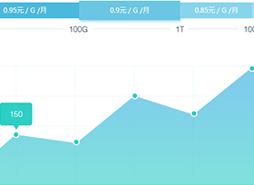

系统更新详情
返回
客户管理系统更新说明
创建时间：2015-08-25 11:57:24 创建者:林新力
泛指用户的操作界面，UI设计主要指界面的样式，美观程度。而使用上，对软件的人机交互、操作逻辑、界面美观的整体设计则是同样重要的另一个门道。好的UI不仅是 让软件变得有个性有品味，还要让软件的操作变得舒适、简单、自由、充分体现软件的定位和特点。UI还有其它的意义，如Unit Interval，Univ of Iowa，Unlock Instruction， Urgent Interrupt。
